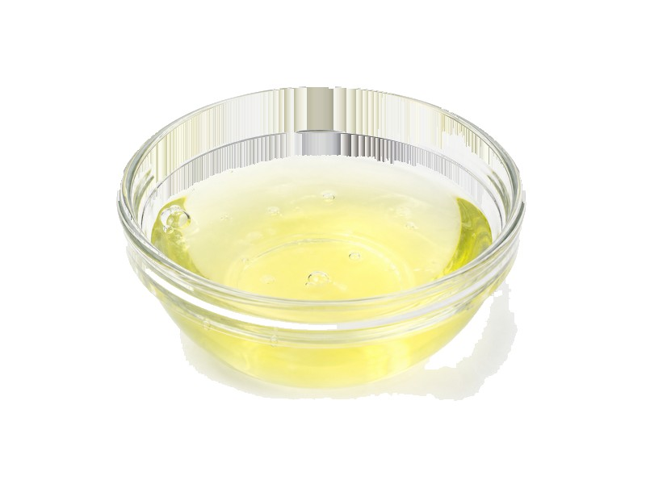

Nabiał i jaja
Białka jaj
Białka jaj: 11 g białka, 52 kcal, 0.7 g węglowodanów i 0.2 g tłuszczu na 100 g. Kategoria: Nabiał i jaja.
Kalorie52 kcalna 100 g
Białko / proteiny11 g
Węglowodany0.7 g
Tłuszcz0.2 g
Cena (szac.)~2,35 złza 100 g
Ceny zaktualizowano: maj 2026 (szacunek — ceny w popularnych supermarketach)
Porcja: szklanka (200g)
| Kalorie | 104 kcal |
|---|---|
| Białko | 22 g |
| Węglowodany | 1.4 g |
| Tłuszcz | 0.4 g |
| Cena (szac.) | ~4,69 zł |
Szczegółowe składniki odżywcze na 100 g
| Wartość energetyczna (kalorie) | 52 kcal |
|---|---|
| Białko (proteiny) | 11 g |
| Węglowodany | 0.7 g |
| Tłuszcz | 0.2 g |
| Tłuszcze nasycone | 0 g |
| Tłuszcze nienasycone | 0.2 g |
| Witaminy i minerały | Potas, Wapń, Witamina B2 |
| Współczynnik kcal / 1 g białka | 4.7 |
| Cena produktu (szac. za 100 g) | ~2,35 zł |
| Cena za 100 g białka (szac.) | ~21,32 zł |